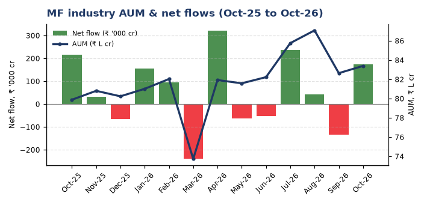
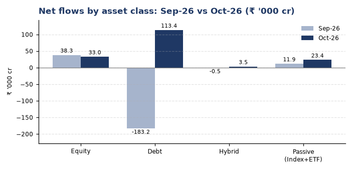
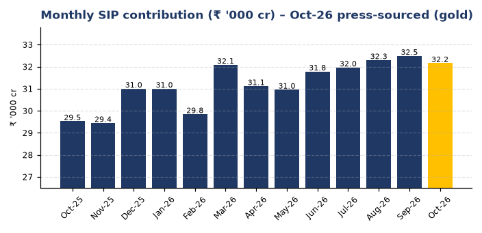
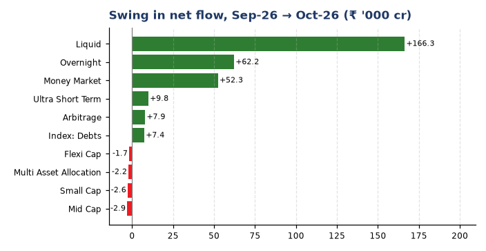
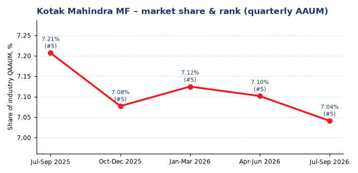
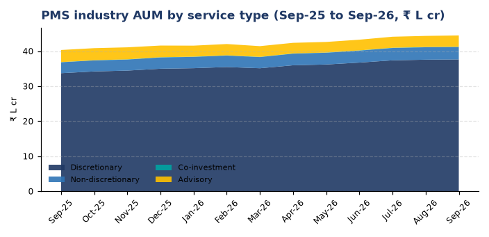
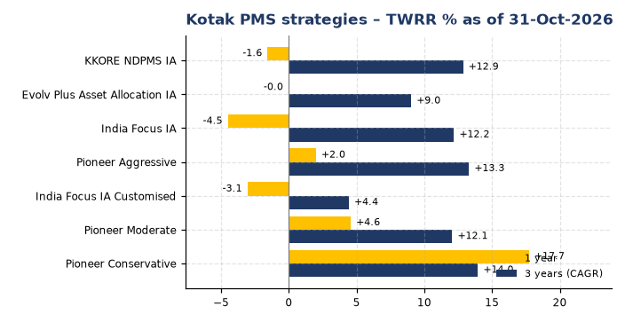

| Metric | Sep-26 | Oct-26 | Change | Note |
|---|---|---|---|---|
| Industry AUM (month-end) | ₹82.64 L cr | ₹83.39 L cr | +₹0.75 L cr | |
| Average AUM | ₹87.09 L cr | ₹85.18 L cr | −₹1.92 L cr | |
| Net flows – all schemes | −₹1,33,376 cr | +₹1,73,840 cr | +₹3,07,215 cr | |
| Equity (open-ended) | +₹38,307 cr | +₹32,994 cr | −₹5,313 cr | |
| Debt | −₹1,83,156 cr | +₹1,13,438 cr | +₹2,96,594 cr | Liquid/overnight inflows after quarter-end |
| Hybrid | −₹457 cr | +₹3,514 cr | +₹3,971 cr | |
| Passive (index funds + ETFs) | +₹11,887 cr | +₹23,394 cr | +₹11,507 cr | |
| SIP contribution PRESS | ₹32,490 cr | ₹32,160 cr | −₹330 cr | AMFI figure as reported by NDTV Profit/Zeebiz (press); AMFI Monthly Note for Oct-26 not yet out |
| Total folios | 28.62 cr | 28.78 cr | +15.8 lakh |




| Category | Group | Sep-26 | Oct-26 | Swing |
|---|---|---|---|---|
| Liquid | Debt | −₹95,743 cr | +₹70,534 cr | +₹1,66,277 cr |
| Overnight | Debt | −₹7,281 cr | +₹54,893 cr | +₹62,174 cr |
| Money Market | Debt | −₹50,846 cr | +₹1,502 cr | +₹52,348 cr |
| Ultra Short Term | Debt | −₹11,729 cr | −₹1,879 cr | +₹9,850 cr |
| Arbitrage | Hybrid | −₹3,956 cr | +₹3,929 cr | +₹7,885 cr |
| Index: Debts | Index Funds | −₹6,258 cr | +₹1,134 cr | +₹7,392 cr |
| Mid Cap | Equity | +₹7,835 cr | +₹4,893 cr | −₹2,942 cr |
| Small Cap | Equity | +₹9,039 cr | +₹6,407 cr | −₹2,631 cr |
| Multi Asset Allocation | Hybrid | +₹3,667 cr | +₹1,515 cr | −₹2,152 cr |
| Flexi Cap | Equity | +₹6,702 cr | +₹4,980 cr | −₹1,722 cr |

| Quarter | Kotak QAAUM | Share | Rank |
|---|---|---|---|
| Jul-Sep 2025 | ₹5.56 L cr | 7.21% | #5 of 49 |
| Oct-Dec 2025 | ₹5.73 L cr | 7.08% | #5 of 52 |
| Jan-Mar 2026 | ₹5.81 L cr | 7.12% | #5 of 52 |
| Apr-Jun 2026 | ₹5.90 L cr | 7.10% | #5 of 55 |
| Jul-Sep 2026 | ₹6.14 L cr | 7.04% | #5 of 57 |
| # | AMC | QAAUM | Share | QoQ | Prev rank |
|---|---|---|---|---|---|
| 1 | SBI Mutual Fund | ₹13.10 L cr | 15.02% | +4.2% | #1 |
| 2 | ICICI Prudential Mutual Fund | ₹11.56 L cr | 13.25% | +3.7% | #2 |
| 3 | HDFC Mutual Fund | ₹9.69 L cr | 11.11% | +3.6% | #3 |
| 4 | Nippon India Mutual Fund | ₹7.87 L cr | 9.02% | +4.7% | #4 |
| 5 | Kotak Mahindra Mutual Fund | ₹6.14 L cr | 7.04% | +4.0% | #5 |
| 6 | Aditya Birla Sun Life Mutual Fund | ₹4.42 L cr | 5.07% | +3.3% | #6 |
| 7 | UTI Mutual Fund | ₹4.02 L cr | 4.61% | +2.5% | #7 |
| 8 | Axis Mutual Fund | ₹3.83 L cr | 4.39% | +3.8% | #8 |
| 9 | DSP Mutual Fund | ₹2.44 L cr | 2.80% | +6.2% | #9 |
| 10 | Mirae Asset Mutual Fund | ₹2.37 L cr | 2.72% | +5.5% | #11 |
| Route | Sep-26 | Oct-26 | Change | Share of direct |
|---|---|---|---|---|
| Total direct-plan AAUM | ₹42.61 L cr | ₹42.02 L cr | −₹0.59 L cr | 100.0% |
| via RIAs | ₹6.18 L cr | ₹6.11 L cr | −₹0.07 L cr | 14.5% |
| via PMS | ₹1.04 L cr | ₹0.99 L cr | −₹0.05 L cr | 2.4% |
| DIY (do-it-yourself) | ₹35.39 L cr | ₹34.92 L cr | −₹0.47 L cr | 83.1% |
| Segment | AUM Aug-26 | AUM Sep-26 | Change | Clients Sep-26 | Δ clients |
|---|---|---|---|---|---|
| Discretionary | ₹37.55 L cr | ₹37.63 L cr | +₹0.08 L cr | 218,514 | +2,817 |
| Non-discretionary | ₹3.55 L cr | ₹3.54 L cr | −₹0.01 L cr | 8,249 | +256 |
| Co-investment | ₹0.07 L cr | ₹0.07 L cr | +₹0.00 L cr | 774 | -63 |
| Advisory | ₹3.17 L cr | ₹3.23 L cr | +₹0.05 L cr | 1,381 | +75 |
| Total | ₹44.35 L cr | ₹44.46 L cr | +₹0.12 L cr | 228,918 | +3,085 |

| # | Portfolio manager | AUM Jun-26 | AUM Sep-26 | QoQ | Clients |
|---|---|---|---|---|---|
| 1 | Sbi Funds Management Limited | ₹14,61,877 cr | ₹12,96,482 cr | -11.3% | 1,981 |
| 2 | Uti Asset Management Company Pvt Ltd | ₹12,15,162 cr | ₹7,73,975 cr | -36.3% | 4 |
| 3 | Hdfc Asset Management Company Limited | ₹12,175 cr | ₹6,86,873 cr | +5541.5% | 245 |
| 4 | Aditya Birla Sun Life Amc Limited | ₹6,41,364 cr | ₹6,63,424 cr | +3.4% | 2,546 |
| 5 | Darashaw & Company Ltd | ₹1,40,377 cr | ₹1,59,890 cr | +13.9% | 252 |
| 6 | Nippon Life India Asset Management Limited | ₹91,287 cr | ₹93,621 cr | +2.6% | 875 |
| 7 | Kotak Mahindra Asset Management Company Ltd | ₹48,113 cr | ₹44,834 cr | -6.8% | 1,511 |
| 8 | Enam Asset Management Co.Pvt.Ltd | ₹42,465 cr | ₹42,000 cr | -1.1% | 1,499 |

| Investment approach | AUM | 1M | 1Y | 3Y | 5Y | Since inception |
|---|---|---|---|---|---|---|
| Kotak KKORE NDPMS Investment Approach | ₹4,378 cr | -2.10% | -1.57% | +12.86% | +10.12% | +12.59% |
| Kotak Evolv Plus Asset Allocation Investment Approach | ₹985 cr | -1.17% | -0.02% | +9.03% | n/a | +8.39% |
| Kotak India Focus Portfolio Investment Approach | ₹766 cr | -4.67% | -4.50% | +12.19% | +10.25% | +14.00% |
| Kotak Evolv Multi Asset NDPMS Investment Approach | ₹557 cr | -3.04% | n/a | n/a | n/a | -2.73% |
| Kotak Pioneer Model Strategy Investment Approach Aggressive | ₹119 cr | -2.52% | +2.00% | +13.30% | n/a | +12.95% |
| Kotak India Focus Portfolio Investment Approach Customised | ₹46.64 cr | -2.85% | -3.06% | +4.43% | +7.04% | +7.95% |
| Kotak Pioneer Model Strategy Investment Approach Moderate | ₹30.09 cr | -1.69% | +4.57% | +12.06% | n/a | +11.32% |
| Kotak Pioneer Model Strategy Investment Approach Conservative | ₹13.80 cr | -0.87% | +17.73% | +13.96% | n/a | +11.95% |
| Kotak Evolv Liquid Investment Approach | ₹8.31 cr | +0.50% | +5.84% | +6.48% | n/a | +6.58% |
| Kotak Evolv Equity NDPMS Investment Approach | ₹7.58 cr | +0.06% | n/a | n/a | n/a | +1.01% |
| Kotak Evolv Liquid NDPMS Investment Approach | ₹4.94 cr | +0.48% | n/a | n/a | n/a | +2.09% |
| Kotak Liquid Investment Approach | ₹1.87 cr | +0.45% | +5.95% | +6.44% | n/a | +6.49% |
| Kotak Equity Portfolio Investment Approach | ₹0.93 cr | -3.27% | -4.11% | +10.04% | n/a | +11.97% |
| Brand | Strategy AUM Oct-26 | # IAs | Aggregate AUM Sep-26 | Clients |
|---|---|---|---|---|
| 360 ONE | ₹57,675 cr | 44 | ₹64,840 cr | 6,824 |
| Enam | ₹34,616 cr | 7 | ₹42,000 cr | 1,499 |
| ICICI Prudential AMC | ₹29,148 cr | 27 | ₹30,145 cr | 30,807 |
| Motilal Oswal | ₹21,880 cr | 47 | ₹23,519 cr | 14,252 |
| Abakkus | ₹21,485 cr | 16 | ₹22,333 cr | 12,173 |
| Valuequest | ₹17,854 cr | 5 | ₹19,285 cr | 1,824 |
| Quantum | ₹16,125 cr | 12 | ₹15,918 cr | 14 |
| Axis AMC | ₹15,150 cr | 26 | ₹15,297 cr | 3,750 |
| Unifi | ₹14,817 cr | 16 | ₹15,863 cr | 7,689 |
| ASK | ₹14,191 cr | 39 | ₹14,960 cr | 6,968 |
| Kotak Mahindra AMC | ₹6,918 cr | 13 | ₹44,834 cr | 1,511 |
| Kotak IA · category | AUM | 1Y | 3Y | 5Y |
|---|---|---|---|---|
| KKORE NDPMS Equity NDPMS · BSE 500 TRI · N=67 | ₹4,378 cr | -1.57% #19/53 med -3.41% | +12.86% #9/35 med +8.99% | +10.12% #5/20 med +7.55% |
| Evolv Plus Asset Allocation Multi Asset DPMS · NSE Multi Asset Index 1 · N=63 | ₹985 cr | -0.02% #20/51 med -1.12% | +9.03% #29/37 med +10.54% | — |
| India Focus Portfolio Equity DPMS · Nifty 50 TRI · N=360 | ₹766 cr | -4.50% #145/315 med -4.73% | +12.19% #44/222 med +8.37% | +10.25% #39/167 med +7.21% |
| Pioneer Model Strategy Aggressive Multi Asset DPMS · NSE Multi Asset Index 1 · N=63 | ₹119 cr | +2.00% #12/51 med -1.12% | +13.30% #8/37 med +10.54% | — |